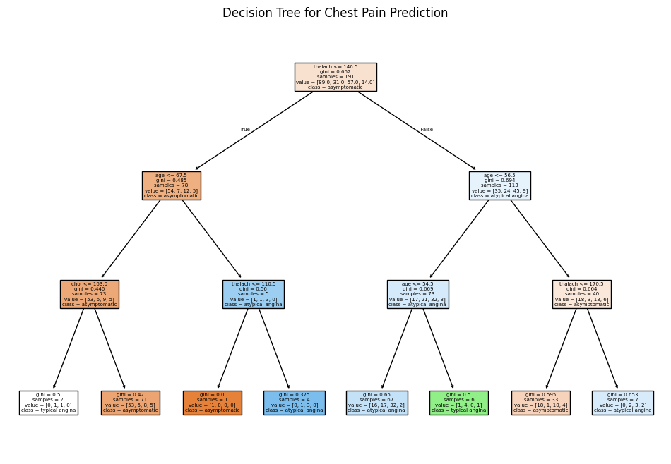

## library imports here
import pandas as pd
from sklearn.pipeline import Pipeline
from sklearn.neighbors import KNeighborsClassifier
from sklearn.tree import DecisionTreeClassifier, plot_tree
from sklearn.linear_model import LogisticRegression
from sklearn.model_selection import train_test_split
from sklearn.preprocessing import StandardScaler
from sklearn.discriminant_analysis import LinearDiscriminantAnalysis
from sklearn.metrics import accuracy_score, f1_score, roc_auc_score
from sklearn import tree
from sklearn.metrics import classification_report
import matplotlib.pyplot as pltOur dataset consists of clinical data from patients who entered the hospital complaining of chest pain (“angina”) during exercise. The information collected includes:
age: Age of the patientsex: Sex of the patientcp: Chest Pain type- Value 0: asymptomatic
- Value 1: typical angina
- Value 2: atypical angina
- Value 3: non-anginal pain
trtbps: resting blood pressure (in mm Hg)chol: cholesterol in mg/dl fetched via BMI sensorrestecg: resting electrocardiographic results- Value 0: normal
- Value 1: having ST-T wave abnormality (T wave inversions and/or ST elevation or depression of > 0.05 mV)
- Value 2: showing probable or definite left ventricular hypertrophy by Estes’ criteria
thalach: maximum heart rate achieved during exerciseoutput: the doctor’s diagnosis of whether the patient is at risk for a heart attack- 0 = not at risk of heart attack
- 1 = at risk of heart attack
ha = pd.read_csv("https://www.dropbox.com/s/aohbr6yb9ifmc8w/heart_attack.csv?dl=1")Q1: Natural Multiclass Models
Fit a multiclass KNN, Decision Tree, and LDA for the heart disease data; this time predicting the type of chest pain (categories 0 - 3) that a patient experiences. For the decision tree, plot the fitted tree, and interpret the first couple splits.
X = ha[['age', 'sex', 'trtbps', 'chol', 'restecg', 'thalach']]
y = ha['cp']
X_train, X_test, y_train, y_test = train_test_split(X, y, test_size=0.3, random_state=42, stratify=y)
# Standardizing the data
scaler = StandardScaler()
X_train_scaled = scaler.fit_transform(X_train)
X_test_scaled = scaler.transform(X_test)
# Fitting a KNN classifier
knn = KNeighborsClassifier(n_neighbors=5)
knn.fit(X_train_scaled, y_train)
knn_pred = knn.predict(X_test_scaled)
# Fitting a Decision Tree classifier
dt = DecisionTreeClassifier(max_depth=3, random_state=42)
dt.fit(X_train, y_train)
dt_pred = dt.predict(X_test)
# Plotting the decision tree
plt.figure(figsize=(12, 8))
plot_tree(dt, feature_names=X.columns, class_names=['asymptomatic', 'typical angina', 'atypical angina', 'non-anginal pain'], filled=True)
plt.title("Decision Tree for Chest Pain Prediction")
plt.show()
lda = LinearDiscriminantAnalysis()
# Fitting the LDA model to the training data
lda.fit(X_train, y_train)
lda_pred = lda.predict(X_test)
# Evaluation
knn_report = classification_report(y_test, knn_pred, target_names=['asymptomatic', 'typical angina', 'atypical angina', 'non-anginal pain'])
dt_report = classification_report(y_test, dt_pred, target_names=['asymptomatic', 'typical angina', 'atypical angina', 'non-anginal pain'])
lda_report = classification_report(y_test, lda_pred, target_names=['asymptomatic', 'typical angina', 'atypical angina', 'non-anginal pain'])
(knn_report, dt_report, lda_report)
/usr/local/lib/python3.10/dist-packages/sklearn/metrics/_classification.py:1531: UndefinedMetricWarning: Precision is ill-defined and being set to 0.0 in labels with no predicted samples. Use `zero_division` parameter to control this behavior.
_warn_prf(average, modifier, f"{metric.capitalize()} is", len(result))
/usr/local/lib/python3.10/dist-packages/sklearn/metrics/_classification.py:1531: UndefinedMetricWarning: Precision is ill-defined and being set to 0.0 in labels with no predicted samples. Use `zero_division` parameter to control this behavior.
_warn_prf(average, modifier, f"{metric.capitalize()} is", len(result))
/usr/local/lib/python3.10/dist-packages/sklearn/metrics/_classification.py:1531: UndefinedMetricWarning: Precision is ill-defined and being set to 0.0 in labels with no predicted samples. Use `zero_division` parameter to control this behavior.
_warn_prf(average, modifier, f"{metric.capitalize()} is", len(result))(' precision recall f1-score support\n\n asymptomatic 0.56 0.77 0.65 39\n typical angina 0.12 0.08 0.10 13\n atypical angina 0.33 0.25 0.29 24\nnon-anginal pain 0.00 0.00 0.00 6\n\n accuracy 0.45 82\n macro avg 0.25 0.27 0.26 82\n weighted avg 0.38 0.45 0.41 82\n',
' precision recall f1-score support\n\n asymptomatic 0.60 0.64 0.62 39\n typical angina 1.00 0.15 0.27 13\n atypical angina 0.37 0.58 0.45 24\nnon-anginal pain 0.00 0.00 0.00 6\n\n accuracy 0.50 82\n macro avg 0.49 0.34 0.33 82\n weighted avg 0.55 0.50 0.47 82\n',
' precision recall f1-score support\n\n asymptomatic 0.59 0.82 0.69 39\n typical angina 0.27 0.31 0.29 13\n atypical angina 0.33 0.17 0.22 24\nnon-anginal pain 0.00 0.00 0.00 6\n\n accuracy 0.49 82\n macro avg 0.30 0.32 0.30 82\n weighted avg 0.42 0.49 0.44 82\n')Q2: OvR
Create a new column in the ha dataset called cp_is_3, which is equal to 1 if the cp variable is equal to 3 and 0 otherwise.
Then, fit a Logistic Regression to predict this new target, and report the F1 Score.
Repeat for the other three cp categories. Which category was the OvR approach best at distinguishing?
# Create a new column for each cp category and fit logistic regression models
f1_scores = {}
for category in range(4):
ha[f'cp_is_{category}'] = (ha['cp'] == category).astype(int)
# Define target variable for the current category
y_category = ha[f'cp_is_{category}']
# Train-test split
X_train, X_test, y_train, y_test = train_test_split(X, y_category, test_size=0.3, random_state=42, stratify=y_category)
# Fit logistic regression model
logreg = LogisticRegression(max_iter=1000, random_state=42)
logreg.fit(X_train, y_train)
y_pred = logreg.predict(X_test)
# Calculate F1 score
f1 = f1_score(y_test, y_pred)
f1_scores[f'cp_is_{category}'] = f1
f1_scores{'cp_is_0': 0.6233766233766234,
'cp_is_1': 0.0,
'cp_is_2': 0.12903225806451613,
'cp_is_3': 0.0}The best category is when chest pain is 0
Q3: OvO
Reduce your dataset to only the 0 and 1 types of chest pain.
Then, fit a Logistic Regression to predict between the two groups, and report the ROC-AUC.
Repeat comparing category 0 to 2 and 3. Which pair was the OvO approach best at distinguishing?
# Function to compare two categories using OvO logistic regression and calculate ROC-AUC
def ovo_logreg_auc(category1, category2):
# Filter dataset for the two categories
ha_ovo = ha[(ha['cp'] == category1) | (ha['cp'] == category2)]
# Create binary target variable
ha_ovo['cp_binary'] = (ha_ovo['cp'] == category2).astype(int)
# Define features and target
X_ovo = ha_ovo[['age', 'sex', 'trtbps', 'chol', 'restecg', 'thalach']]
y_ovo = ha_ovo['cp_binary']
# Train-test split
X_train, X_test, y_train, y_test = train_test_split(X_ovo, y_ovo, test_size=0.3, random_state=42, stratify=y_ovo)
# Fit logistic regression model
logreg = LogisticRegression(max_iter=1000, random_state=42)
logreg.fit(X_train, y_train)
y_pred_prob = logreg.predict_proba(X_test)[:, 1]
# Calculate ROC-AUC
auc = roc_auc_score(y_test, y_pred_prob)
return auc
# Calculate ROC-AUC for each pair
auc_0_1 = ovo_logreg_auc(0, 1)
auc_0_2 = ovo_logreg_auc(0, 2)
auc_0_3 = ovo_logreg_auc(0, 3)
# Store results in a dictionary and find the best pair
auc_results = {
'0 vs 1': auc_0_1,
'0 vs 2': auc_0_2,
'0 vs 3': auc_0_3
}
auc_resultsSettingWithCopyWarning:
A value is trying to be set on a copy of a slice from a DataFrame.
Try using .loc[row_indexer,col_indexer] = value instead
See the caveats in the documentation: https://pandas.pydata.org/pandas-docs/stable/user_guide/indexing.html#returning-a-view-versus-a-copy
ha_ovo['cp_binary'] = (ha_ovo['cp'] == category2).astype(int)
<ipython-input-18-43561ce65867>:7: SettingWithCopyWarning:
A value is trying to be set on a copy of a slice from a DataFrame.
Try using .loc[row_indexer,col_indexer] = value instead
See the caveats in the documentation: https://pandas.pydata.org/pandas-docs/stable/user_guide/indexing.html#returning-a-view-versus-a-copy
ha_ovo['cp_binary'] = (ha_ovo['cp'] == category2).astype(int)
<ipython-input-18-43561ce65867>:7: SettingWithCopyWarning:
A value is trying to be set on a copy of a slice from a DataFrame.
Try using .loc[row_indexer,col_indexer] = value instead
See the caveats in the documentation: https://pandas.pydata.org/pandas-docs/stable/user_guide/indexing.html#returning-a-view-versus-a-copy
ha_ovo['cp_binary'] = (ha_ovo['cp'] == category2).astype(int){'0 vs 1': 0.719921104536489,
'0 vs 2': 0.7991452991452991,
'0 vs 3': 0.6837606837606838}The best pair is 0 and 2